ABB Robot Introduction
The Robot
The robot is an ABB model number IRB1200 featuring six joints, J1 to J6, and it come with not tools attached. Including any custom tools in total it can lift up to 5kg of payload. The robot indexes space using a right-handed coordinate system situated at the center of its base under J1. The X-axis is the forward/backward direction, Y-axis is sideways and Z-axis is vertical.
Additionally, the coordinate system at robot's flange, at J6, is also a right-handed with the Z-axis normal to the flange and the Y-axis pointing down in the home position, as seen in the figure below. The home position is where all joint angles are zero. Information regarding the conversion between joint angles and world coordinates is provided in the kinematics section of the robot modeling chapter.
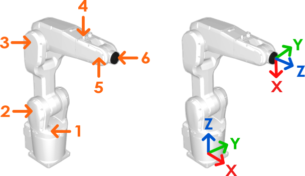
The Gripper
The robot comes with a parallel pneumatic gripper with range between 18-28mm. The general dimension of the bracket and the gripper itself are seen below. The tool may be removed and replaced with another. Note that the flange's bolt-hole circle diameter is 31.5mm and the screws used are M5. Drawing are available in the IRB1200's documentation. For attaching customized eg. 3D printed fingers on the gripper use M3 screws as seen below. The model number of the gripper is Festo DHPS-16.
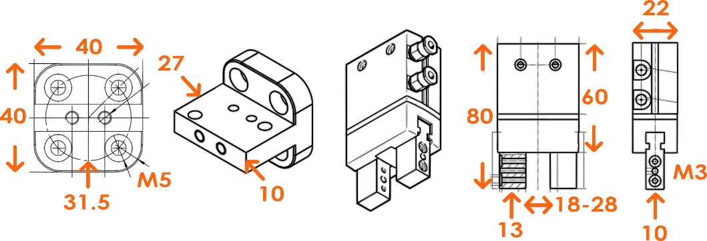
The Controller
The controller is located under the base of the robot inside the cabinet. The only operation you are required to know is the location of the on/off switch at position (1) in the figure below. The switch (2) is an emergency stop push-in/twist-out button rarely used because there is another one on the teaching pendant. The controller is setup for manual operations where the deadman switch must be held down during robot motion. To operate in automatic mode the key switch (3) must be turned accordingly and the activation button (4) pressed. Do not switch to automatic mode without checking first for safety precautions.
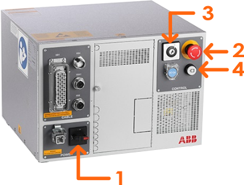
The Pendant
The teaching pendant features a Windows-like user interface, a set of physical buttons, the joystick, the emergency stop red button and the deadman switch on the side. The main menu expands by pressing the upper-left corner. There are several application modules accessible from here discussed below. Next to it is the messages/notifications bar. You may need to expand it to acknowledge errors when they occur.
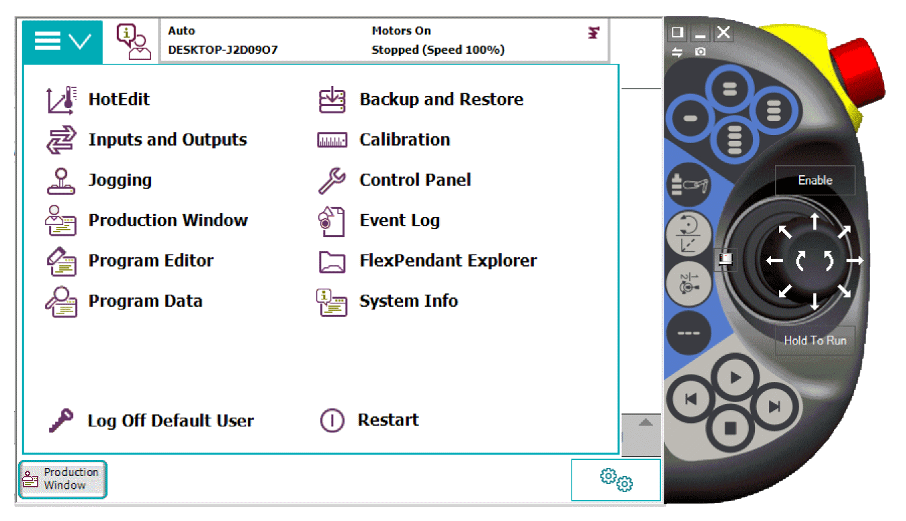
Basic Actions
Basic actions include turning on and off the robot/controller and logging in and out from the robot's operating system. The actions are listed below in the order performed in a typical usage scenario. Do follow these steps carefully for both safety and avoidance of damaging the robots.
Turn On
The robot turns on by switching the controller on and waiting until the operating system is loaded and the teaching pendant becomes active. Make sure the power cable is plugged in the wall socket before turning it on and also make sure to unplug the power cable and store it inside the base cabinet after turning off the controller, explained below. Locking the power cable in the cabinet is for safety purposes.
Log Out
Before being able to do much with the robot you need to first change the user settings. This is a precaution for safety purposes. The default user has very limited control over the robot. The first thing you must do once the robot's operating system has loaded is to log out as the default user by selecting the relevant option in the start menu.
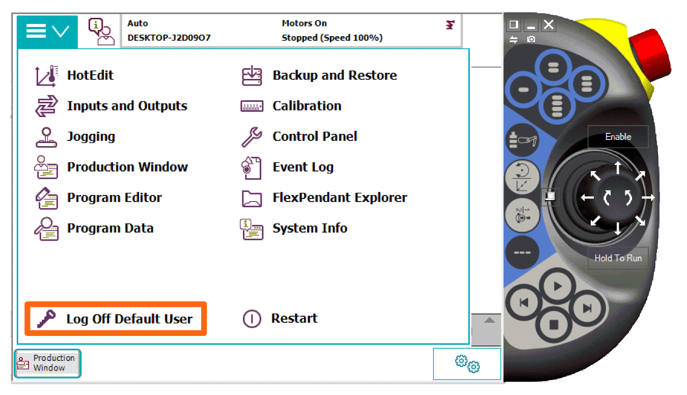
Log In
Then log-in as a student or faculty user. Certain operations such as robot calibration are not accessible as a student. The password will be provided after the safety training session.
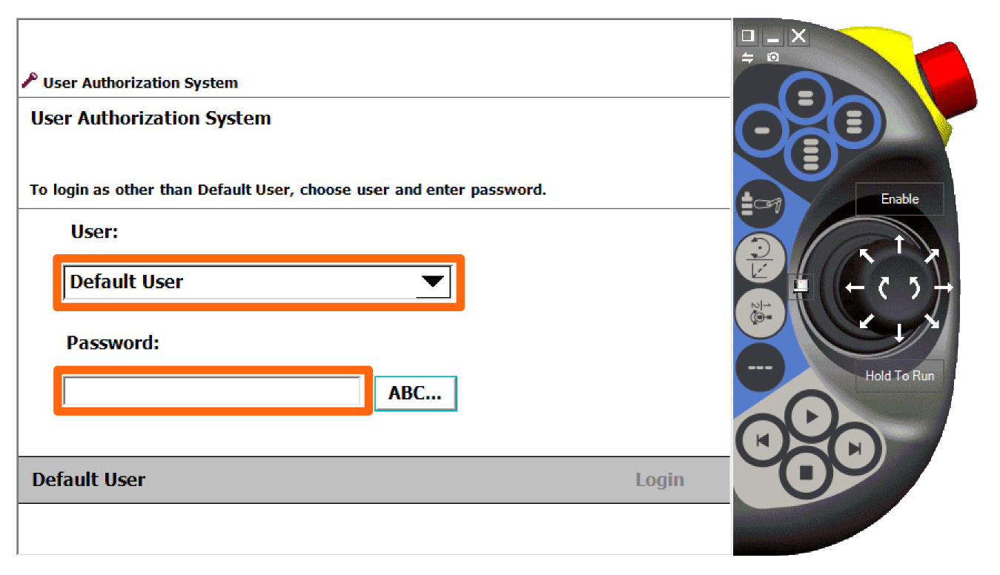
Turn Off
Shutting down the robot requires a peculiar sequence of steps. Do not just turn off the robot by switching off the controller! First shut down the main computer and then the controller. In the start menu select the restart button as seen below.
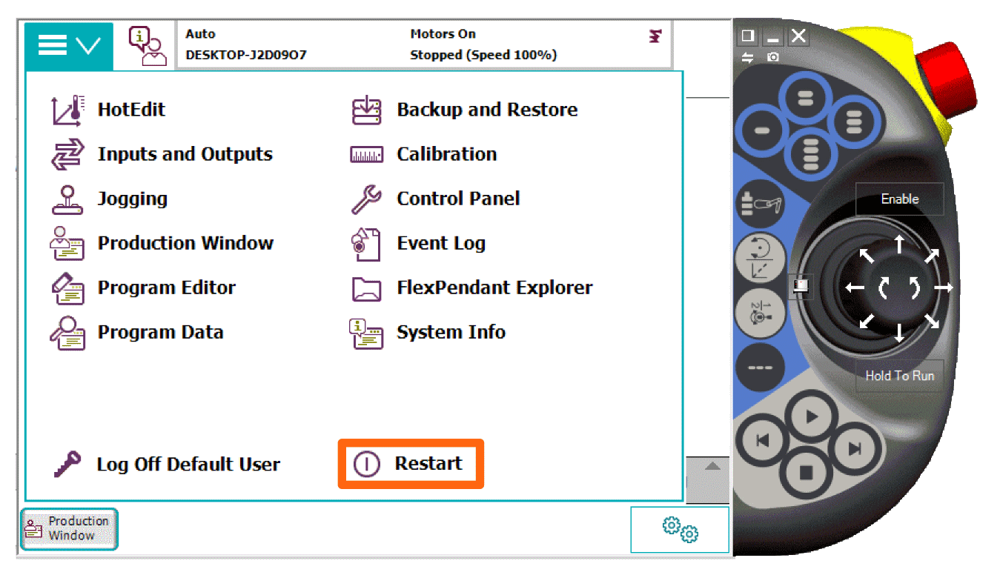
From here there are two options available: (a) restart/reboot the controller and (b) log off and shut down the controller. Restarting is obvious, however, shutting down requires first to select the advanced option.
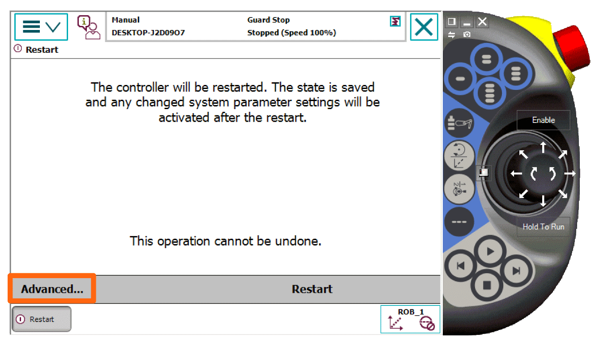
Finally, select the shut down the main computer option and the next button as seen below. Then wait for a few seconds and when the pendant reports that the computer has shut down, you may turn off the controller,
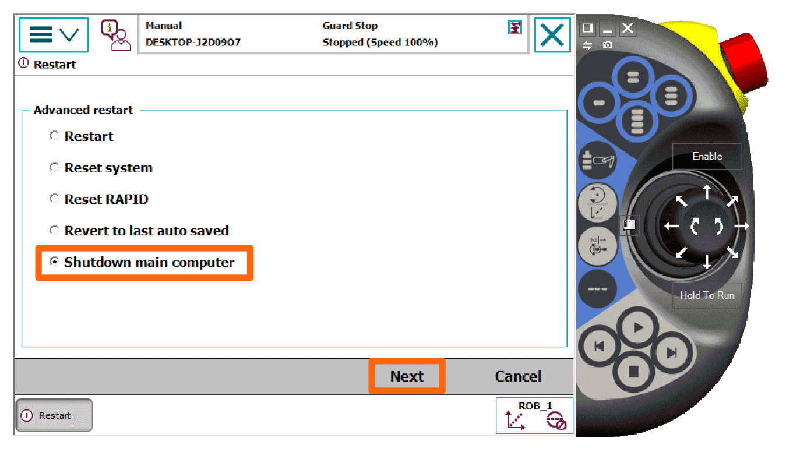
Jogging
There are two modes for manually moving, aka jogging, the robot: (a) by axis angles, where the angle for each of the six axes can be adjusted, and (b) by world coordinates, where the position of the TCP can be adjusted in relationship to the world's axes. The joystick has three degrees of freedom, up/down, left/right, cw/ccw. Those map to three axes at a time, namely 1-2-3, 4-5-6, or X-Y-Z. The joystick is force-sensitive, the more you push in one direction the faster the robot will move. Additionally, for being able to jog the robot you need to hold constantly down the deadman switch on the side of the pendant. Press until you hear the motor breaks loosen. Pressing too hard puts the robot in an emergency hold position mode. So press firmly but not too hard.
Speed
Before jogging the robot it is best to set its jogging speed low to avoid accidental crashes. Pressing the highlighted button at the bottom right corner of the screen brings up the settings panel. In the vertical pop-up menu select the topmost action and expand the details by pressing the relevant button. You can adjust the jogging speed using the +/- button as seen below.
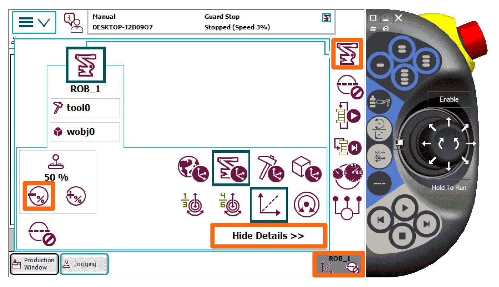
Joint Angles
The 1|2 physical button selects the robot's motor axis-angles mode of jogging. Note the correspondence between the robot's axes and the joystick's axes: (R1) left/right, (R2) up/down and (R3) cw/ccw.
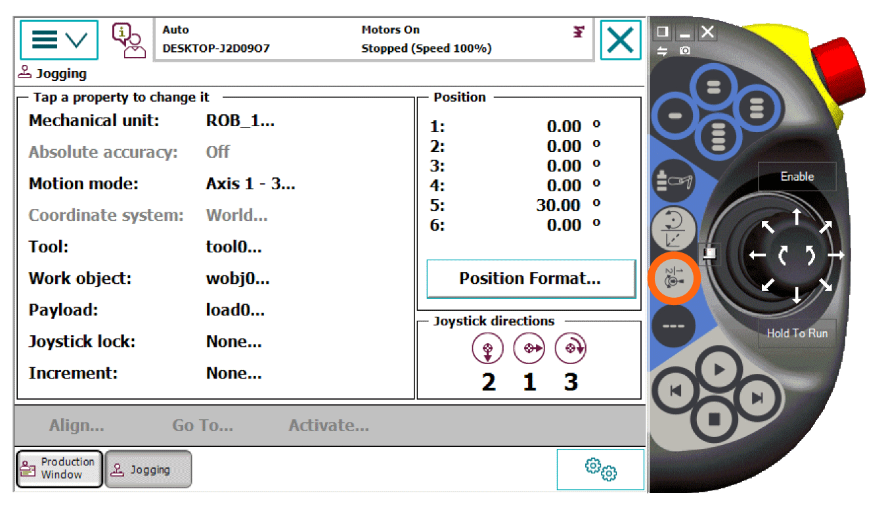
Pressing the same button toggles between the 1-2-3 and 4-5-6 axes. The relationship between the robot's axes and joystick is now (R4) left/right (R5) up/down and (R6) cw/ccw.
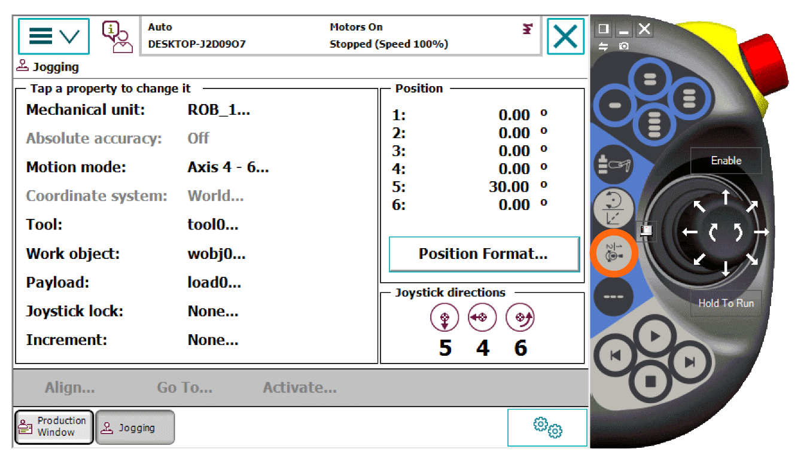
World Axes
To jog about the world axes, the highlighted button must be pushed first. Then the pendant will report the position of the TCP and its orientation in quaternion form. The joystick's directions map to world (X) up/down, (Y) left/right, and (Z) cw/ccw.
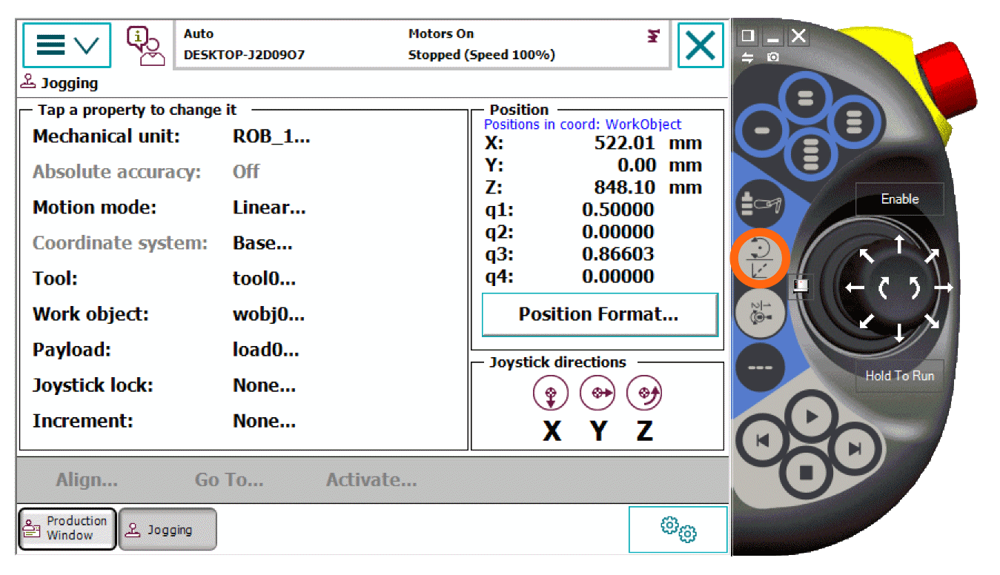
Singularities
When the robot is at certain configurations, such as at its home position where all joint angles are zero, jogging using world axes throws near singularity errors. To avoid this it is recommended to bias the robot by jogging it using joint angles such as (J1) 0.0, (J2) -15.0, (J3) 25.0, (J4) 0.0, (J5) -10.0 and (J6) 0.0. Note that the values for J2, J3 and J5 are selected as such that the TCP is in a horizontal pose.
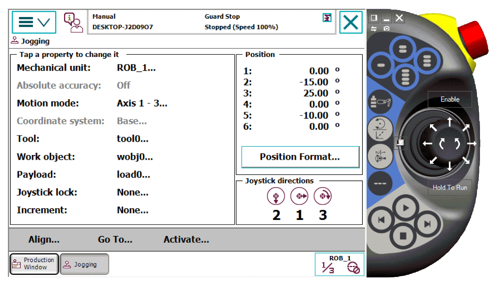
Disengagement
During touching off workspace points it is common to bring the robot very close to a hard surface. To avoid crashing the robot against the surface pay attention to the directions of the arrows in the icons. For example, to move the robot up in the Z-direction away from the table you need to twist the joystick counter-clockwise, because up in the physical world is in the positive Z-direction as indicated by the relevant icon.
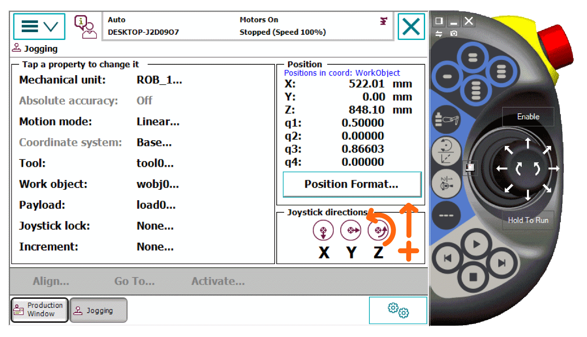
Robot Programs
Robot programs are loaded and run via the production window applet selected from the main menu. To load a program saved/uploaded from the robot's controller, select the load program button at the bottom right. Then browse for the project file in the Windows Explorer-like window and select load.
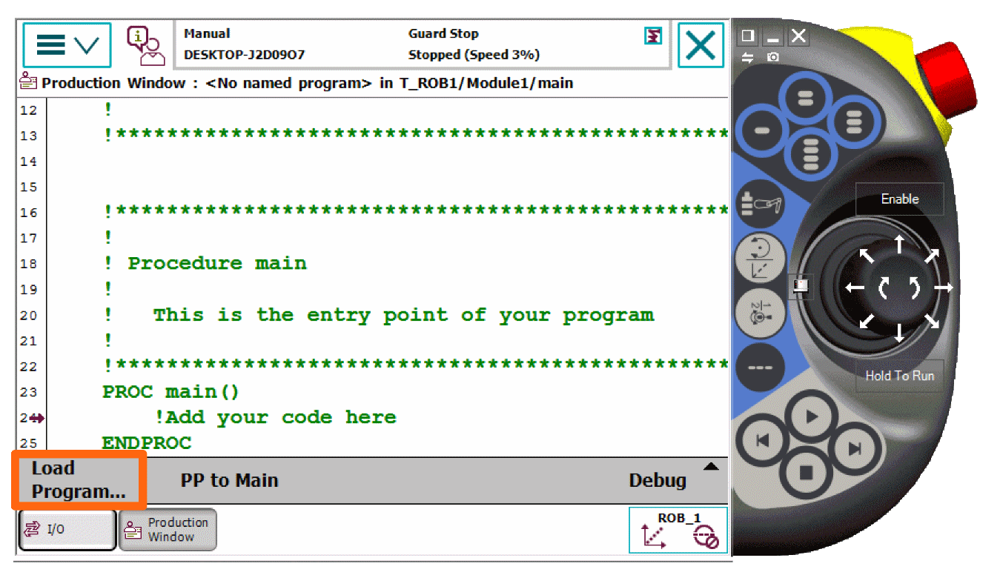
Playback
If there are no errors with the program, then the screen will update and the program pointer will move to the start of the main function. To run the program first you need to hold down the deadman switch and then press the play button. To stop the program execution you may either release the deadman switch or press the stop button.
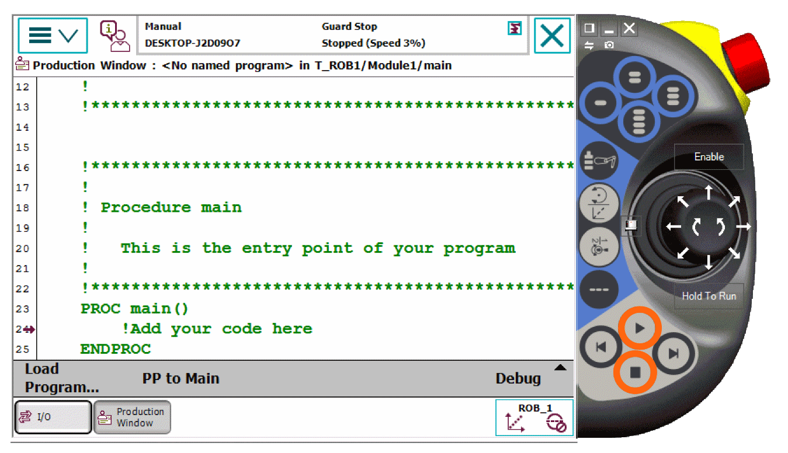
Stepping
The forward/backward buttons allow executing each line of code / instructions one by one, aka debugging. This is useful for the first time you run a program and want to make sure things are correct and safe. To restart the program from the beginning you need to press the PP to Main, which stands for send the program pointer to the start of the main function.
Speed
Another very important feature is that you may want to slow down the program execution the very first you run it. The robot's motion speed can be adjusted globally using the pop-up speed menu as seen below.
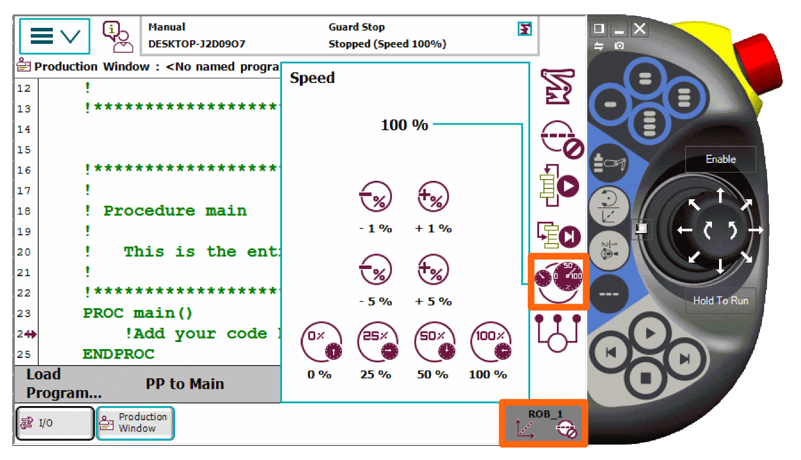
Signals
The robot's controller supports 16 input and 16 output digital signals some of which have been already assigned to various tool operations. The digital output signals are named as DO00 to DO15 and the inputs DI00 to DI15. To inspect and modify the output signals use the Inputs and Outputs application from the start menu. Note that the DO15 toggles the pneumatic gripper and DO14 toggles the vacuum line for the suction gripper.
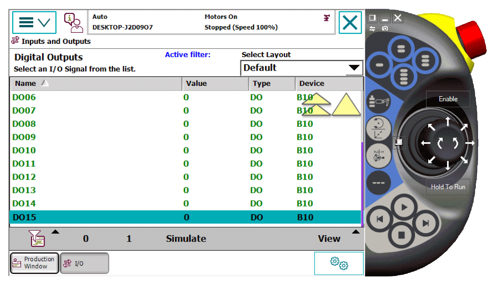
Networking
In order to connect to the robot's controller please use the ethernet cable with the USB adapter provided. The first time the USB-to-Ethernet device is connected to your computer you need to perform a few steps for establishing communications. It is recommended to use the USB dongle even if your laptop has an ethernet port because you may not want to mess with the automatic settings of your built-in adapter. Additionally, Windows remembers the settings per adapter so the following steps need to be performed only once.
- In the
Start MenutypeControl Panelto bring up the relevant settings window. - Select the
Network and Sharing Centersystem settings.- If it is not visible, then select the
View by: Small Iconsoption first.
- If it is not visible, then select the
- Select the
Change Adapter Settings, on the left side of the window. - In the new window right click over the ethernet connection and select
Properties. - Select the
Internet Protocol Version 4 (TCP/IPv4)from the list and clickProperties. - Select
Use the following IP addressand enter- IP Address:
192.168.125.11 - Subnet Mask:
255.255.255.0
- IP Address:
Calibration
If the robot's battery is low, the motor encoders may lose their position counters when starting up. In this case, the pendant will notify you that the robot is not calibrated and needs to be zeroed. The joint angles in the jogging window will be displayed in red color and the controller will not allow world-space jogging. To resolve this, first acknowledge the warning, then manually jog each robot axis to its zero position slowly.
Zeroing
Note the joint angle values seen on the pendant are not correct if the encoders have lost track of their counts. Zeroing is performed by eyeballing the markers on the actual robot!
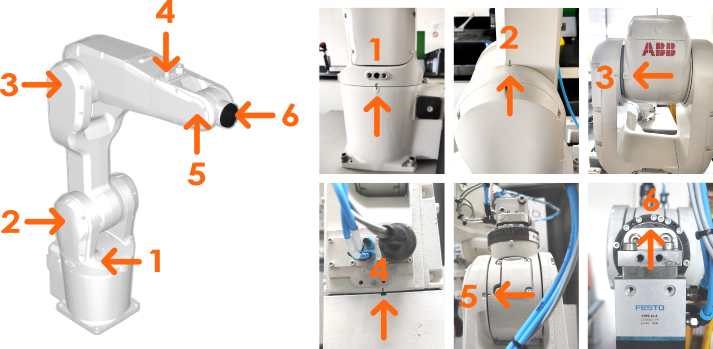
Resetting
From the start menu select the calibration application and then in the new window select the robot from the list.
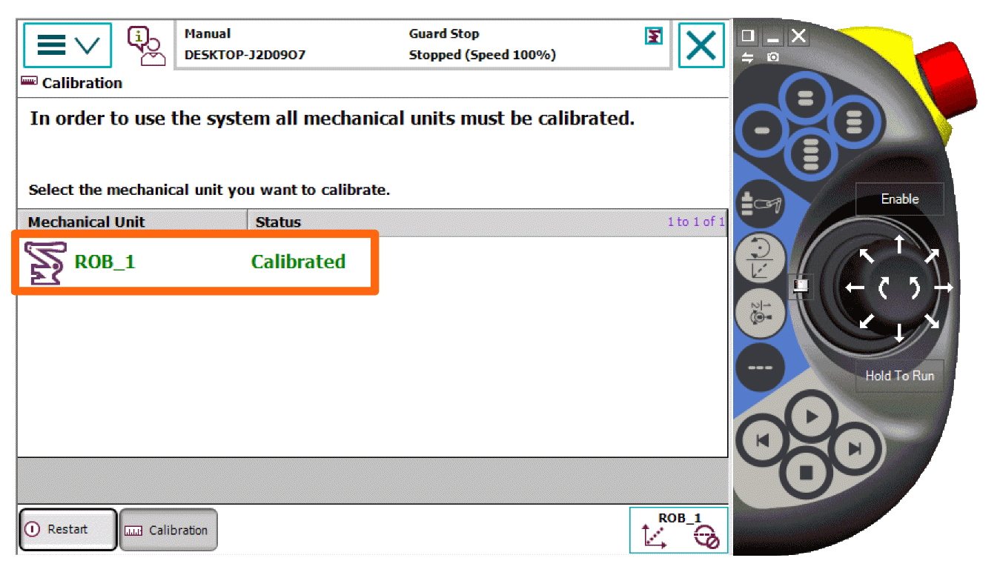
In the new window select the manual / advanced calibration option. Note that this may look a bit different based on the version of the pendant's software.
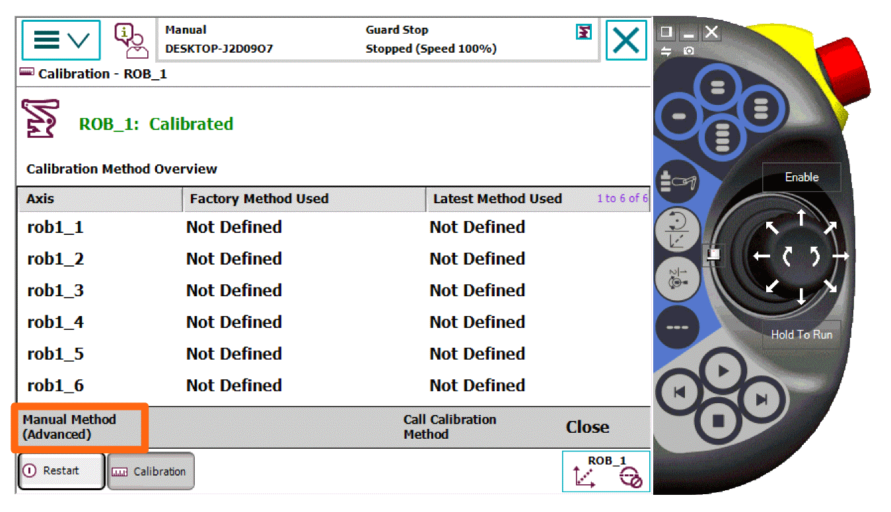
Finally, select the update the revolution counters and accept the changes. There will be additional windows warning about accepting the calibration settings. Just accept all and wait till the counters are reset. In the jogging screen the joint angles will be now all zero in black color font face.
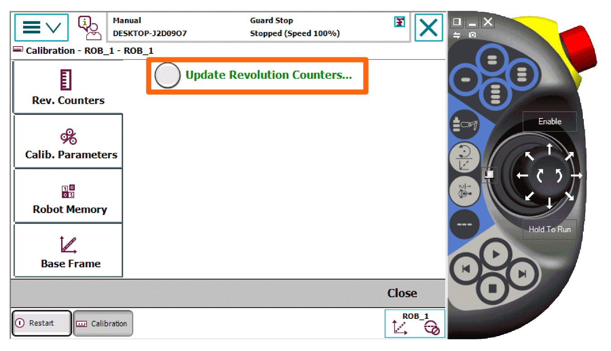